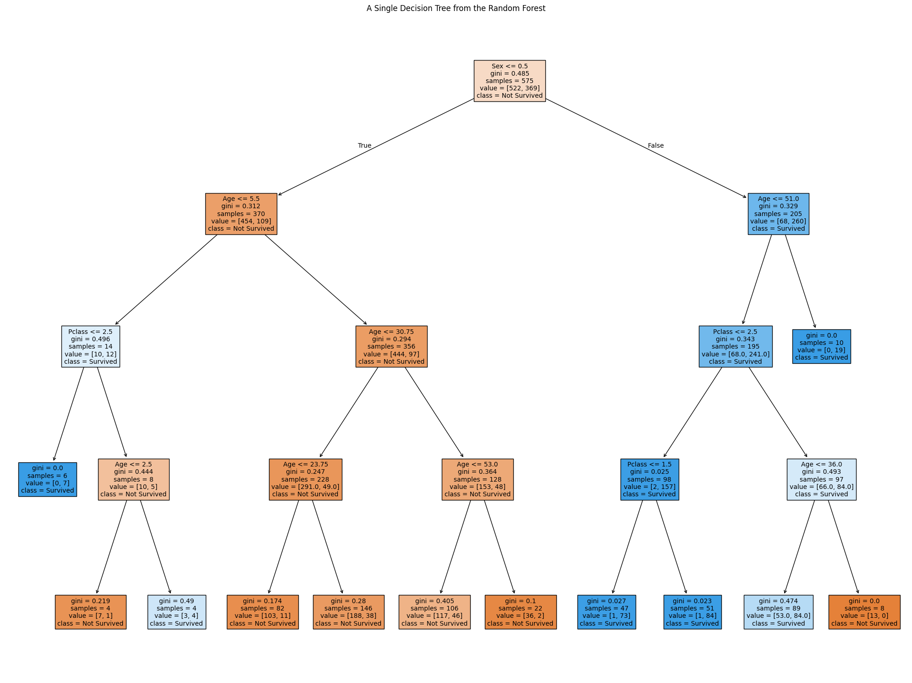

A machine learning project that uses the Random Forest algorithm to predict the survival chances of Titanic passengers.
Why choose this?
Although this project has no practical use, I believe it highlights how significantly age class and gender affected survival chances aboard the Titanic.
This project showcases how machine learning algorithms like Random Forest can model complex relationships between features, such as age, gender, and class, to predict survival chances aboard the Titanic.
The Random Forest algorithm was selected for its accuracy and ability to handle both numerical and categorical data effectively.
For this project, data such as age, gender, passenger class, and survival status were used for predictions.
The Titanic dataset from Kaggle was used as the primary source for this project.
The dataset required significant pre-processing, including handling missing values, encoding categorical variables, and selecting relevant features for training the Random Forest model.
Pre-processing steps included:
Using Python (jupiter Notebook) and Matplotlib, I visualized a single decision tree from the Random Forest model. This visualization highlights how individual trees in the Random Forest make decisions based on splits in the data.
The visualization shows splits based on features like gender, passenger class, and age, providing insight into the survival likelihood for different groups of passengers.
Below are different decision trees that I have gotten from running my random forest code, each one is different from the other
The Random Forest algorithm was used due to its robust performance and ability to handle data with missing values and non-linear relationships.
Random Forest operates by building multiple decision trees during training and outputting the class (survival or not) that is the mode of the classes (classification) of the individual trees.
By limiting the depth of the trees and using multiple estimators, the model avoids overfitting and produces generalizable predictions.
Online tutorials and documentation played a crucial role in implementing the Random Forest algorithm. Key resources included:
This project was implemented using the following tools: